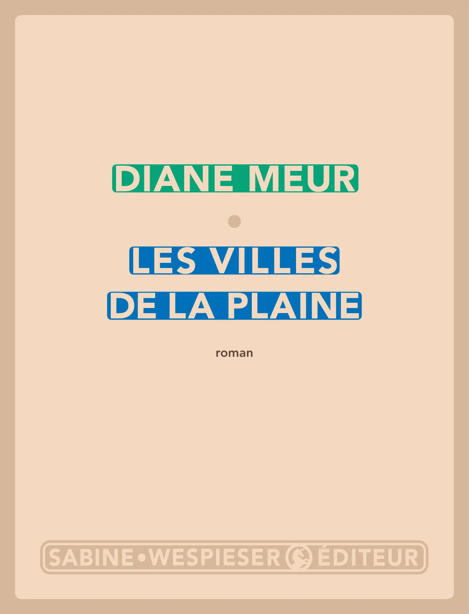

C’est par Claire Duvivier que j’ai entendu parler de ce livre - qu’on pourrait qualifier de fantasy antique - pour la première fois. L’autrice française (qui a notamment écrit Un long voyage et les trois tomes du cycle Capitale du Nord) n’a pas tari d’éloges envers Les villes de la plaine lors d’une émission de la Salle 101 dans laquelle elle était invitée à présenter trois oeuvres qui l’ont marquée en tant qu’écrivaine. C’est à Diane Meur, autrice belge dont j’ai découvert l’existence pour l’occasion, que nous devons ce roman et après une telle recommandation j’avais hâte de mettre la main dessus pour m’y plonger.
Ordjéneb est un montagnard, un étranger qui entre dans l’orgueilleuse Sir (ville fictive de l’antiquité lointaine qu’on imagine aisément quelque part en Mésopotamie) pour rembourser une dette. Complètement ignorant des traditions locales, il réussit à entrer au service d’Asral, un célèbre scribe chargé de retranscrire les lois de la ville. Edictées des siècles auparavant par Anouher, figure la plus sacrée et respectée de la ville, elles sont recopiées à l’identiques à intervalles régulières - un rite immuable. Asral, pourtant, est un scribe un peu spécial. En discutant avec Ordjéneb, qui pose de nombreuses questions et parle un dialecte archaïque, il s’interroge sur la signification des termes qu’il retranscrit et sur leur interprétation. Ne serait-il pas temps de dépoussiérer ces lois et de réfléchir à leur sens premier ?
Avec ce roman, Diane Meur nous parle de l’esprit et de la lettre, des sources du pouvoir et du sens des mots. Et c’est passionnant. L’autrice ne se limite d’ailleurs pas à un étalage de réflexions intéressantes, elle nous offre en sus de superbes relations sentimentales, des personnages écrits avec justesse et des péripéties de grande ampleur dans un monde vivant. Avec simplicité et de bien belle manière, Diane Meur m’a offert d’habiter Sir le temps de ma lecture, de m’imprégner de ses bâtiments, ses habitants et ses rites. Que je pourrais bien demander de plus ?
Sortie : 2011
Image :